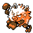

#057
Primeape
Fighting
Abilities: Vital Spirit, Anger Point, Defiant
Base stats BST 455
HP65
Attack105
Defense60
Speed105
Sp. Atk60
Sp. Def60
Evolution
dbbw EVOLVE_LEVEL, 40, ANNIHILAPELevel-up learnset
LevelMoveType
Lv. 1Focus EnergyNormal
Lv. 1LeerNormal
Lv. 1Low KickFighting
Lv. 1ScratchNormal
Lv. 5Fury SwipesNormal
Lv. 8Mud SlapGround
Lv. 13Karate ChopFighting
Lv. 15Seismic TossFighting
Lv. 17SwaggerNormal
Lv. 23Ice PunchIce
Lv. 23ThunderpunchElectric
Lv. 23Fire PunchFire
Lv. 26Cross ChopFighting
Lv. 30Skull BashNormal
Lv. 34Night SlashDark
Lv. 38Close CombatFighting
Lv. 42ThrashNormal
Lv. 46U TurnBug
Lv. 50ScreechNormal
Lv. 54OutrageDragon
Lv. 58Close CombatFighting